Hey, welcome to my website! I'm a Software Developer that graduated with a B.Eng (Software Engineering) from McMaster University with a diverse range of skills and experiences in full stack development. I have a passion for space and an interest in a variety of space development technologies. My main career interests are in software fields relating to software and AR/VR development. Through my involvement in executive roles within McMaster's engineering society, I have also become highly proficient in all aspects of leadership - being able to lead and unite teams in identifying and resolving challenges of both technical and social nature, all while being accountable to affected stakeholders and adjudicatory bodies.
Overall, I am open to learning about any topic in computing and can quickly pick up the essential skills and knowledge necessary for it. The personal projects that I am currently working on are small in scope and mainly focused on learning and becoming efficient with the given language, IDE, or tool used in them. In the not-too-distant future, I plan to shift my focus more towards larger projects around global issues in technology and software.
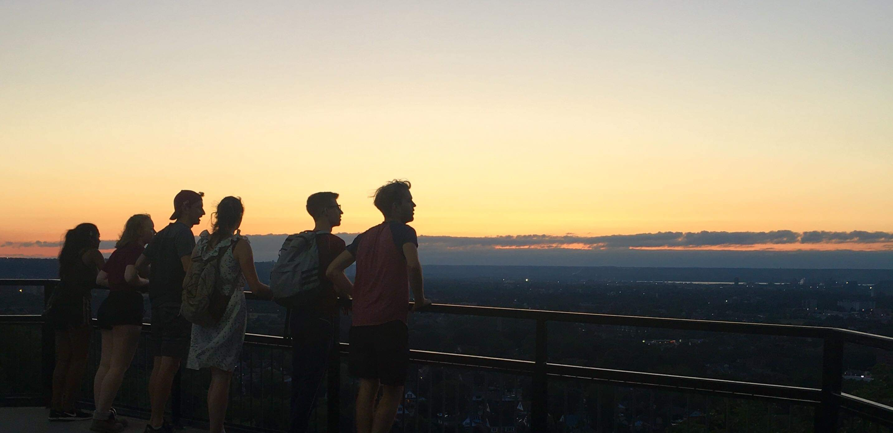
I can speak three languages, being fluent in both English and Romanian, with a working proficiency in French. I've been practicing Muay Thai since 2016, becoming a junior instructor and having the opportunity to train under a world-champion Kruyai. I have a love for every type of board - having learned to ride snowboards, skateboards, longboards, and pennyboards, I'm always happy to take on new challenges! My other hobbies include running, reading, and playing the electric guitar!
➢ Leading the MES response to COVID-19 in an effort to continue providing our services to students and to keep them socially connected throughout the cancellation of in-person classes and non-essential events by McMaster University.
➢ As part of a team, successfully responded to the Student Choice Initiative policy implemented by the provincial government in January 2019 (deemed unlawful, November 2019) with a 71% retention in student MES membership.
➢ Finished the Waterloo Harvest Half 2019 half-marathon with a 5:21 pace.
➢ Won McMaster Hebocon 2020.
I hope you enjoy your experience on my website, feel free to contact me about any questions or inquiries!
Projects
Utrition - April 2023
Open source project that allows users to track their progress towards their health goals.
Users can upload a picture, speak, or type out what they ate in natural language, and Utrition provides all
the nutritional data of the meal and saves it in the user's profile. The profile contains data visualizations
and metrics to assist users in tracking their nutrition goals.
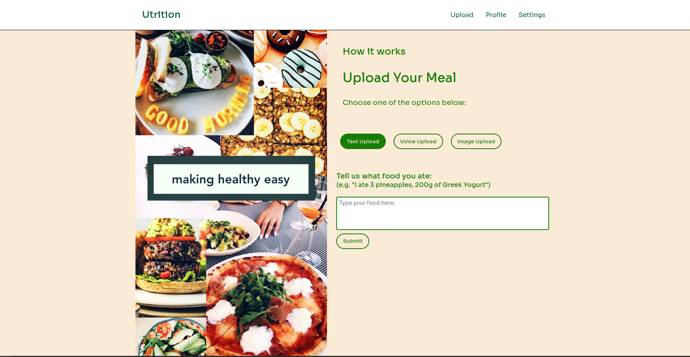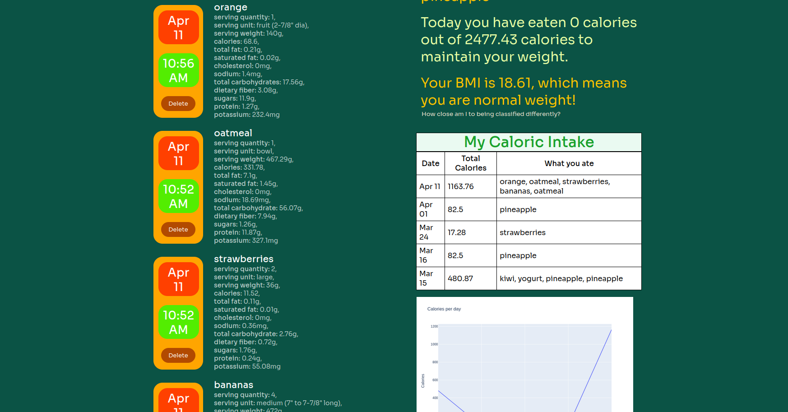
Nootab - March 2023
Customize your browser with a minimalist new tab page that provides seamless access to search, calendar scheduling, and note-taking, all with customizable colour themes. Try it out here!
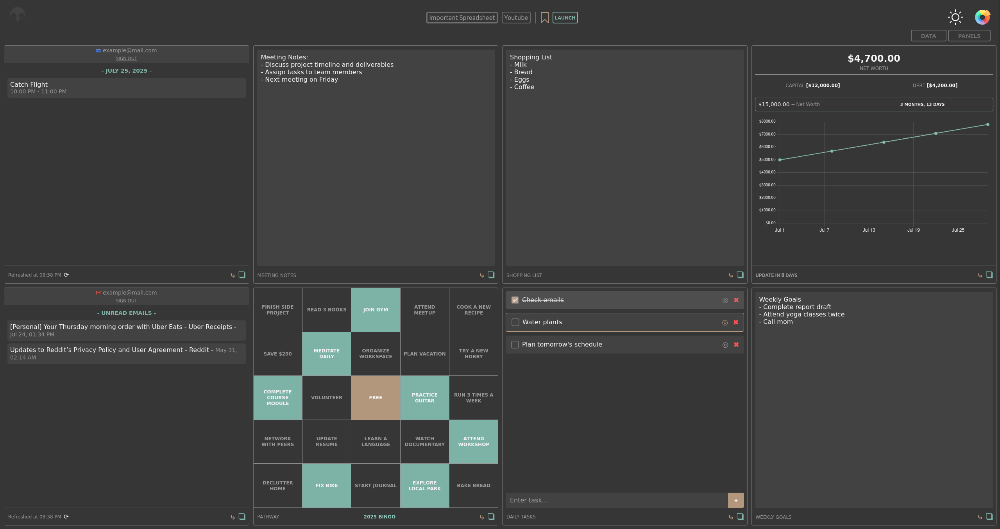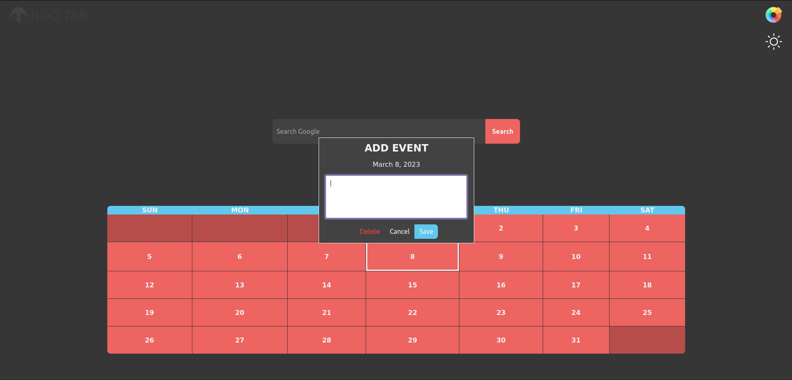
Questly - November 2022
Web application designed to assist middle school teachers in delivering computer
science education to their students. Questly offers an online classroom management system along with
grade-specific computer science content, modules, and assessments. Additionally, it provides problem
walkthroughs, progress tracking, and grade reporting to teachers.
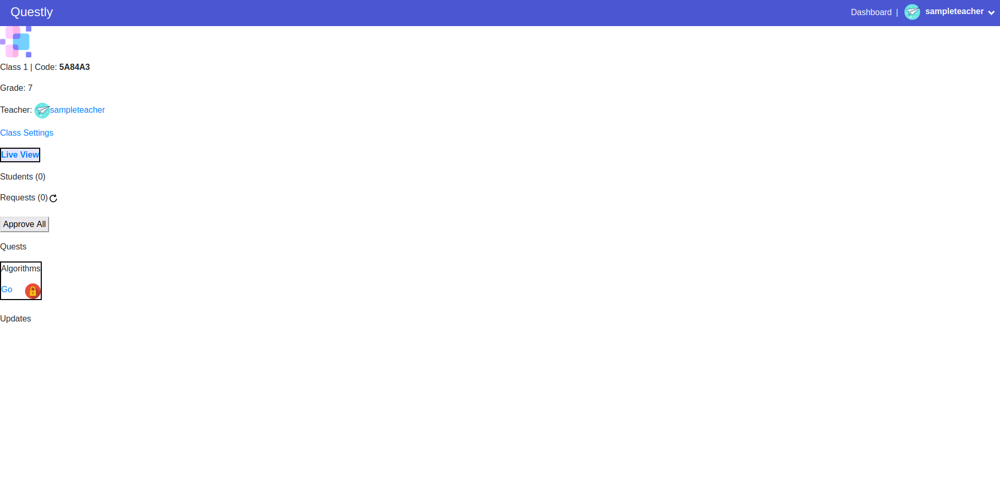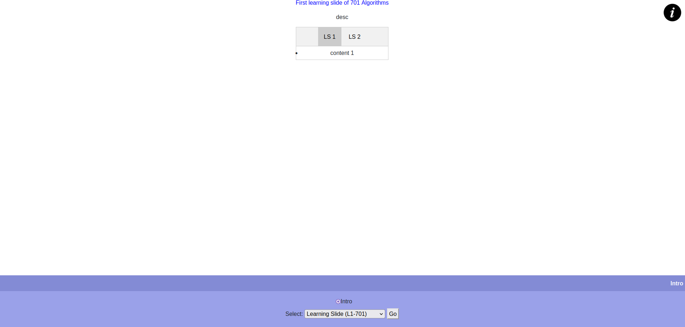
ebookGenesis - March 2021
ebookGenesis is a python bot that can find and download any ebook from just its name, using Internet Relay Chat channels to crawl existing ebook repositories and enabling file transfers through the Direct Client-to-Client sub-protocol of IRC. One of the only functioning, open-source, IRC ebook bots. The goal of this project was to familiarize myself with networking protocols and building bots.
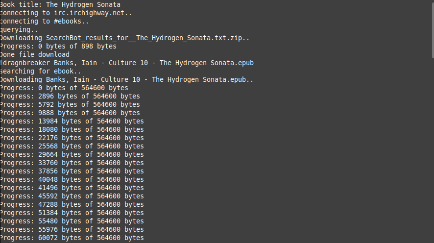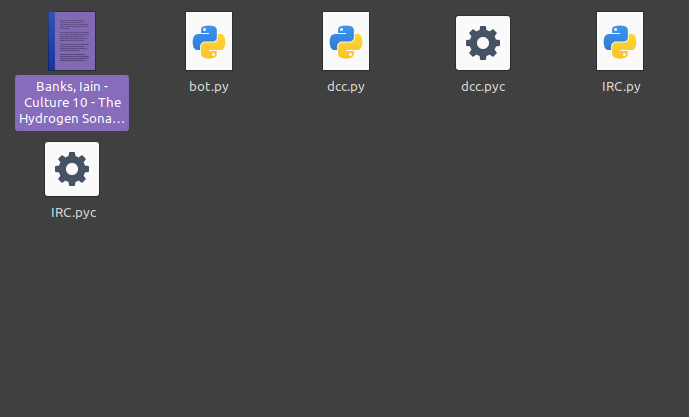
alexmoica.com - July 2020
alexmoica.com is my personal professional website built with a pure HTML, CSS, and JavaScript frontend. I aim to keep this website regularly updated with major developments in my life, career, and other involvements. The goal of this project was to apply my knowledge of HTML and CSS to a long-term project, as well as to have a website to promote myself throughout any future endeavours.
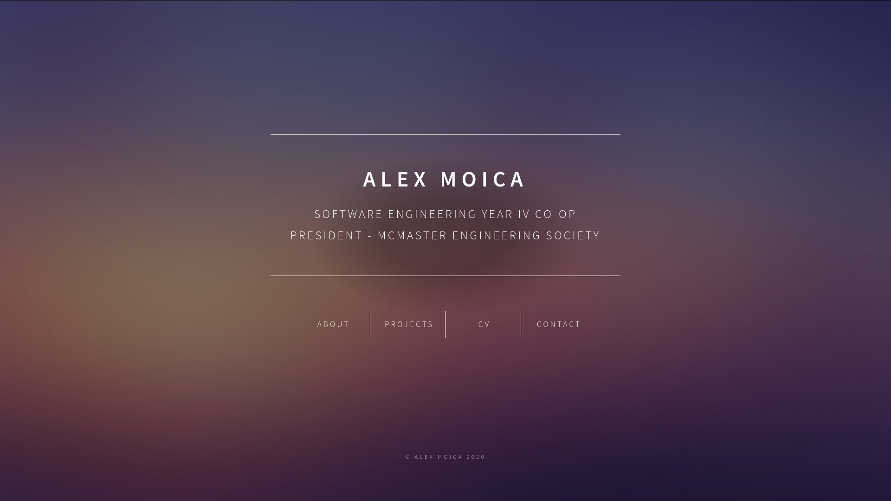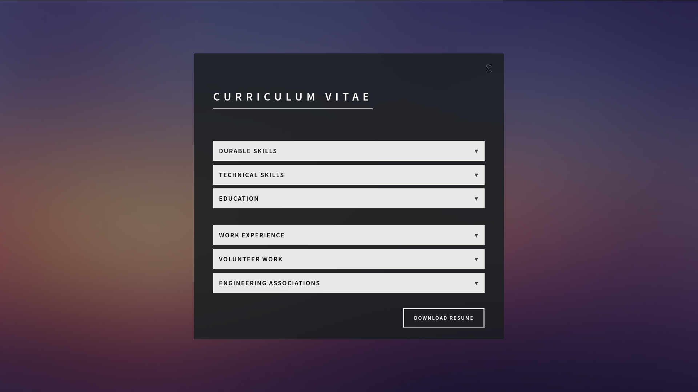
USCitySP - March 2020
USCitySP is a program used to find the shortest and most cost-efficient path between any two US cities, providing the most direct path while taking into account stops for food in each city. Written in Java and making use of Dijkstra's shortest path algorithm, USCitySP outputs the BFS and DFS traces, as well as the shortest path with city names, meal prices, and restaurant addresses, into a text file. The goal of this project was to learn how to create and manipulate graphs and graphing algorithms in Java.
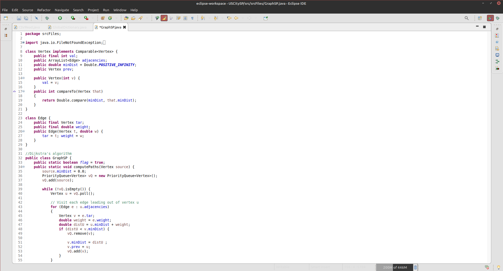
Food Identifier - November 2019
Food Identifier is a machine learning application created to distinguish between a variety of fruits and vegetables. Based on TensorFlow and using the CIFAR-100 database for training images, this application identifies user images, entered through a Tkinter GUI, by food type. The goal of this project was to learn the fundamentals of machine learning and the Tensorflow library implemented in Python.
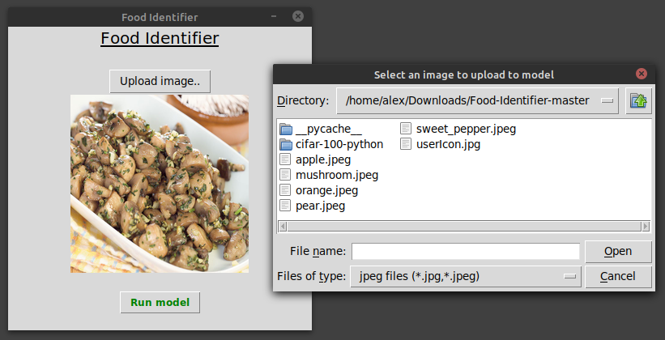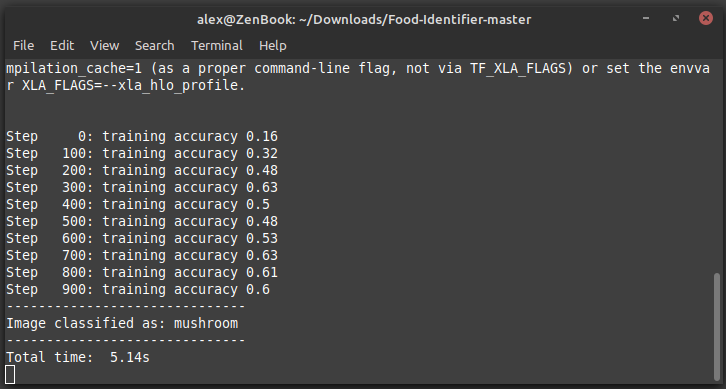
Assets - May 2018
Assets is a money management system for PC that dynamically tracks multiple account balances. Assets stores the transaction records for each account into a separate text file, which is used to create live graphs and a history of deposits and withdrawals from the given account. The goal of this project was to learn the basic and advanced features of the standard python graphics library, Tkinter, and how to interface it with the matplotlib library.
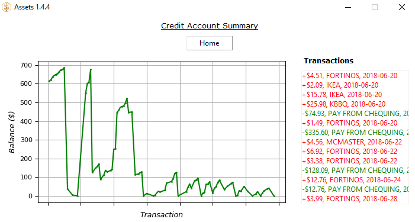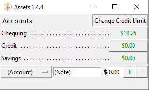
Curriculum Vitae
Public Speaking developed through student and Faculty addresses as the McMaster Engineering Society (MES) President.
Leadership demonstrated through my position as President of the MES and organizing/leading the McMaster Engineering Competition.
Time Management developed by taking on multiple concurrent roles throughout my undergraduate at McMaster Engineering.
Attention to Detail developed through formulating a response to both the SCI and COVID-19 crises for the MES, as well as creating lab procedural/instruction manuals.
Analytical/Problem Solving Skills developed through multiple technical hobby projects, as well as managing student & professional teams.
Communication developed through accurately conveying the visions and plans of action of the MES and McMaster University to students and professionals.
Industry Tools
Linux (Ubuntu/Debian)
Visual Studio Professional
CI/CD
Ruby on Rails
Django
Jest
Git
GitHub
GitHub Codespaces
AWS DevOps
LaTeX
Android Studio
PostgreSQL
Database Management Systems (IBM db2)
Microsoft Server Management Studio
Pipeline Management (Jenkins, GoCD)
Technical Skills
C#
C
Python
Java
Ruby
Bash
HTML
CSS
JavaScript
jQuery
AJAX
AngularJS
SQL
MATLAB
Data Structures & Algorithms
Requirements Specification
Software Validation & Verification
B.Eng. Software Engineering2023 McMaster University
International Baccalaureate Diploma with OSSD 2017 Colonel By Secondary School
Silver Medal (>90% average)
Software Developer January 2022 - August 2022 Clio
➢ Worked as part of a team developing Clio’s Outlook add-on, enabling lawyers to file millions of emails to their Clio manage platforms.
➢ Created an endpoint to allow users to re-file individual emails instead of having to re-file all their failed emails in bulk, giving users more control over the emails they choose to file.
➢ Investigated and logged the top 20 most frequently occurring bugs in the Clio Outlook add-on.
➢ Performed in-depth technical research and presentations to company developers.
➢ Ranked most active Codespaces developer within Clio as of April 2022.
Full Stack Course Developer September 2021 - January 2022 CreationCamp
➢ Planned and created a project-based full stack course with content intended to teach high school students with no prior coding experience how to understand and use HTML, CSS, JavaScript, MongoDB, Express, React, and Node.js to create and host web applications.
➢ Taught the full stack web development course to high school students in Ontario over a period of 4 months. Every student successfully completed the course having created 2 individual projects and 1 collaborative final project based on the MERN stack.
➢ Designed 4 modular template websites for use in web development workshops to teach high school students how to understand and use HTML and CSS.
➢ Planned and hosted a web development workshop for 40+ high school students on the intersection of coding and web technologies with the Not For Profit field.
Cloud Software Developer Intern May 2021 - August 2021 SOTI
➢ Created, implemented, and maintained application test cases and test coverage based on software requirements and technical specifications for all SOTI's product offerings.
➢ Worked collaboratively in agile, CICD development teams and independently managed my time to complete tickets related to managing and updating pipelines, updating user interfaces, creating stored procedures, and working on Cloud Management System APIs and Product Orchestration endpoints.
➢ Migrated the framework of our Cloud Management System solution (comprised of 84 projects), resolving dependencies and fixing any library issues encountered.
➢ Significantly reduced SQL server calls to under 100 per minute from the previously 1000's of calls a minute by implementing application side caching of commonly accessed tables.
President March 2020 - March 2021 McMaster Engineering Society (MES)
➢ Set the vision and direction of the MES for the upcoming year within the scope of complimenting student education through efficient use of our three-quarter million dollar budget; providing and supporting mental & physical wellness, academic advocacy & equity, social events, technical & non-technical engineering involvement, and engineering student culture & traditions.
➢ Led a team of seven Executives/Associate-Executives, providing guidance for their initiatives while ensuring a supportive and open team dynamic.
➢ Represented our 5500+ constituents to McMaster University as well as to provincial and federal organizations on academic concerns and legislation.
Program Support Assistant May 2020 - August 2020 McMaster University
➢ Actively engaged in the virtualization of the McMaster Engineering undergraduate summer research program.
➢ Promoted student engagement, particularly as related to the virtual and in-person engagement of students with clubs, teams, and competitions while maintaining safety protocols.
➢ Welcomed the incoming cohort to the Faculty of Engineering through programs such as the MES Summer Mailout and EMBER (self-paced learning modules and daily, live, interactive tutorials led by upper year engineering students).
Vice President Academic March 2019 - March 2020 McMaster Engineering Society (MES)
➢ Worked effectively as part of an executive team to lead the society through recent provincial regulations negatively impacting student societies, while greatly improving the value and efficiency of offered services.
➢ Liaised with the Dean, Associate Deans, and Faculty heads regarding academic issues impacting over 5500 students such as curriculum changes, academic fairness, and program restructuring.
➢ Organized/assisted all major academic initiatives of the Faculty of Engineering and the McMaster Engineering Society.
Public Relations Coordinator April 2018 - March 2019 McMaster Engineering Society (MES)
➢ Organized MES representation to promote the McMaster Engineering Society and the engineering profession at EngFest, Faculty of Engineering Open Houses, and MES charity events.
➢ Grew social media channels by over 40 000 engagements, and exemplified leadership and oral communication skills through communicating effectively with over 5000 students to create and promote events and activities.
➢ Coordinated all outreach, media recognition, ambassadorship, and mentorship programs of the McMaster Faculty of Engineering and the MES.
First Year Representative September 2017 - April 2018 McMaster Engineering Society (MES)
➢ Represented ~1000 McMaster Engineering Students and brought their concerns, thoughts, and suggestions to the attention of the MES Council, making important decisions on behalf of them.
➢ Organized social nights, information sessions, and inter-faculty activities for McMaster students in Engineering Level I.
➢ Promoted involvement in giving a voice to first year engineering students at McMaster while also taking charge in planning and executing events and activities across campus.
Activities Coordinator June 2016 - August 2016 Global Partners Institute Canada
➢ Organized a team of conversation aides for Japanese students from Caritas Junior College on visit to Canada to aid with English conversational skills and learning about the culture and traditions of Canada.
➢ Planned all the welcoming events, recreational activities, and field trips that students from Caritas Junior College would participate in during their time in Canada for their English immersion program.
➢ Ensured that both Caritas' interests and the students' interests aligned throughout the events planned.
Google Ignite Computer Science Mentor 2017 McMaster University
➢ Mentored ~50 students from Huntington Elementary School in grades 5 to 8 on functional programming and how to understand and employ Elm, a programming language that compiles to HTML, CSS and JavaScript to create animated scenes.
➢ Taught students how to define functions and variables, employ mathematical concepts into their code, and manipulate objects properties under the supervision of Dr. Christopher Anand through the McMaster Outreach Program.
➢ Demonstrated computer, analytical, problem solving, and oral communication skills in writing, debugging, and compiling both personally written and student written code.
Junior Design Coordinator 2018 McMaster Engineering Competition
➢ Implemented a creative and innovative challenge idea that tackles one of societies biggest engineering-related problems while offering aspiring engineers invaluable experience that builds confidence and competence in engineering.
➢ Created guiding documents relevant to the challenge and designed and constructed the testing apparatus used for judging the competitors submissions.
➢ Employed teamwork and time-management skills in leading a team of volunteers and overseeing logistics to keep the competition running smoothly.